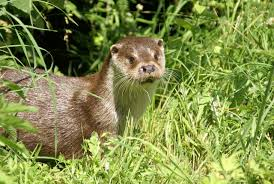

Loutre
Prénom : Looky
Race : loutre d'Europe appartenant à la famille des mustélidés
Habitat : dans les marais
La loutre désigne une sous-famille de mammifères carnivores nocturnes appartenant à la famille des Mustelidés. Il existe plusieurs espèces de loutres. La loutre d’Europe ou loutre commune est certainement l’espèce la plus connue. C’est d’ailleurs la seule espèce que l’on trouve en France. La loutre se caractérise par son corps allongé et fuselé, ses pattes palmées et sa longue queue. Elle mesure entre 40 et 85cm. Sa hauteur au garrot n’excède pas les 30 cm. La loutre possède des oreilles courtes de 2 à 3cm de longueur ainsi qu’un museau obtus qui se termine par des vibrisses blanches de 20 cm. Le pelage de la loutre est de couleur brun foncé. On note la présence de taches blanches sur la gorge et le menton. La fourrure est composée de poils courts et longs qui s’emboîtent. La loutre pèse entre 5 à 15 kg.